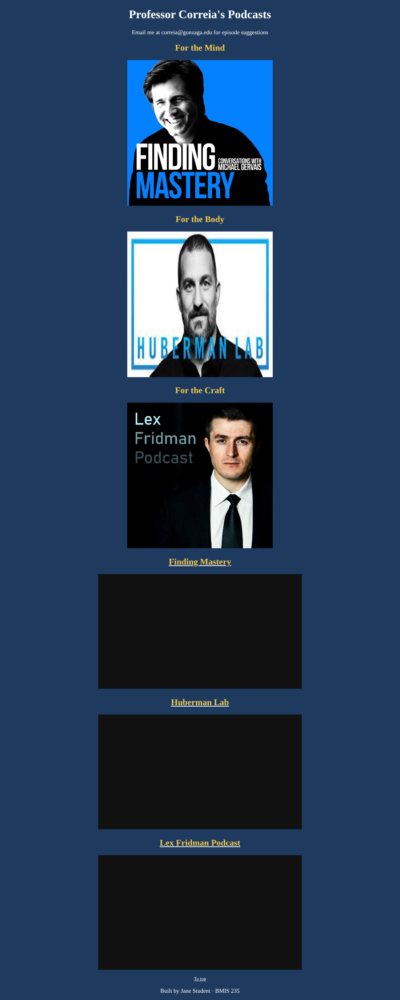

HTML-2
Links & Video
Embed YouTube videos and use internal links so clicking an image jumps down to its video.
Your starter files
They're already in your bmis235 repo, in the assignment2 folder. You copied them in Start here, so there's nothing to download.
Files: index.html, gervais.jpg, huberman.jpg, fridman.jpg
Don't have a bmis235 repo yet? Do Start here first.
The page: Mind, Body, Craft
The starter page has three sections. The Mind section already works. Use it as your model to fix the other two.
| Section | Podcast | Image | Jump id | Embed link |
|---|---|---|---|---|
| Mind | Finding Mastery | gervais.jpg | findingmastery | https://www.youtube.com/embed/4L98ssI5Vxw ✓ works |
| Body | Huberman Lab | huberman.jpg | huberman | https://www.youtube.com/embed/pq6WHJzOkno |
| Craft | Lex Fridman Podcast | fridman.jpg | fridman | https://www.youtube.com/embed/kFQUDCgMjRc |
What to do
- Change the
<title>so the browser tab shows your name.2 pts - Embed the Huberman and Fridman videos so they play like Finding Mastery. Each video section has two things to fix: the title/link above it and the video
src.2 pts - Add the Body and Craft images to the menu so each image links to its video.2 pts
- Add your own section: put your image first in the menu, above Mind, and add a video you chose that shares some wisdom. Clicking your image must take you to your video.2 pts
- Change the color scheme to your liking.1 pt
- Submit a working GitHub Pages link.1 pt
How the jump links work
The Mind image is wrapped in a link that points to an id:
<a href="#findingmastery"><img src="gervais.jpg" ...></a>Further down, right before the video, is the matching spot it jumps to:
<a id="findingmastery"></a>The # name in the link must match the id exactly. The Body and Craft links already point to #huberman and #fridman. Find where their ids are missing.
Adding your own video
- Find a YouTube video that shares wisdom (for example, a talk by Brené Brown).
- Click Share → Embed and copy the link inside
src="...". - Upload an image for it with Add file → Upload files.
- Copy an existing section (menu image + video section), paste it, then change the image, the id, the title and the video link.
"Video unavailable"? Some owners block embedding. That's not your code. Pick another video.
YouTube Shorts: change youtube.com/shorts/ABC123 to youtube.com/embed/ABC123.
Make it yours
- Fill in the author comment at the top of every file with your name and GU username.
- Fill in
<meta name="author">with your name. - Fill in the footer: Built by YOUR NAME · BMIS 235.
- Make at least 3 commits with clear messages (not "Update index.html").
- Your own video, image and section title. Pick something that matters to you.
Finished example

When you're stuck
- Say it in one sentence: "I expected ___, but I see ___."
- Pick one problem. Ignore the rest for now.
- Find the line. Which tag or file is it in?
- Search your one sentence (W3Schools, Google, YouTube).
- Change one thing, commit, check. Didn't work? Undo it and try the next idea.
"Nothing works" can't be searched. "My image shows a broken icon" can.
Submit
- Wait 1–2 minutes after your last commit.
- Open your live link and check that everything works:
https://YOUR-GITHUB-USERNAME.github.io/bmis235/assignment2/ - Paste that link into Canvas.
Rubric
| Criteria | Pts |
|---|---|
| Tab title shows your name | 2 |
| Huberman and Fridman videos embedded | 2 |
| Each menu image links to its video | 2 |
| Your own section with image that jumps to your video | 2 |
| Color scheme changed | 1 |
| Working GitHub Pages link | 1 |
| Total | 10 |